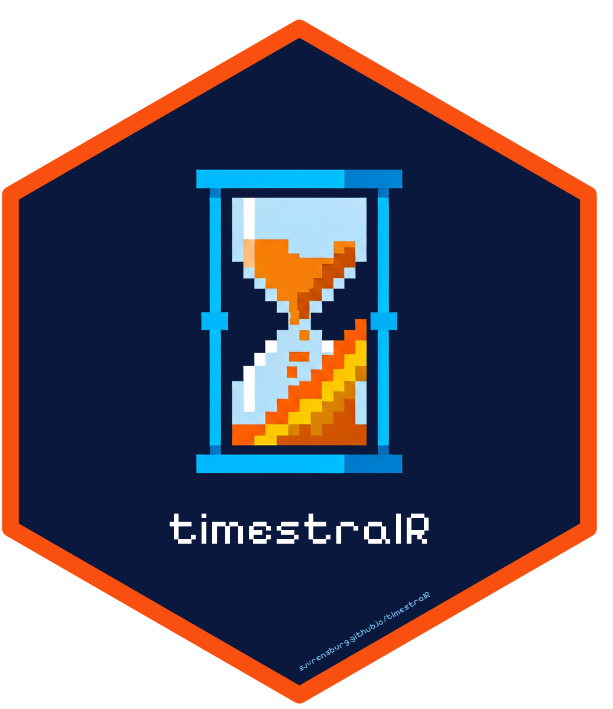

Package index
-
timestral_load() - Load a Timestral model
-
timestral_download() - Download a Timestral checkpoint
-
timestral_supports_covariates()timestral_supports_known_covariates() - Which covariates a checkpoint can condition on
-
timestral_forecast() - Forecast one or more series
-
predict(<timestral_model>) - Forecast with a Timestral model through
predict() -
timestral_median() - Median forecast
-
timestral_quantile() - Forecast at one quantile level
-
timestral_levels() - Quantile levels of the official Timestral checkpoints
-
timestral_score() - Score quantile forecasts against realised values
-
timestral_backtest() - Rolling-origin backtest of a Timestral model
-
plot(<timestral_forecast>) - Fan-chart plot of a Timestral forecast
-
autoplot(<timestral_forecast>)autolayer(<timestral_forecast>) - ggplot2 fan chart of a Timestral forecast
-
as_forecast_df() - Forecast as a long data frame
-
as_tsibble(<timestral_forecast>) - Convert a Timestral forecast to a tsibble
-
TIMESTRAL() - Timestral as a fable model
-
as_fable(<timestral_forecast>) - Convert a Timestral forecast to a fable forecast table
-
forecast(<timestral_model>) - Forecast with the forecast package's
forecast()generic -
timestral_as_forecast() - Convert a Timestral forecast to a
forecast-package object
-
timestralRtimestralR-package - timestralR: Zero-Shot Probabilistic Forecasting with Timestral